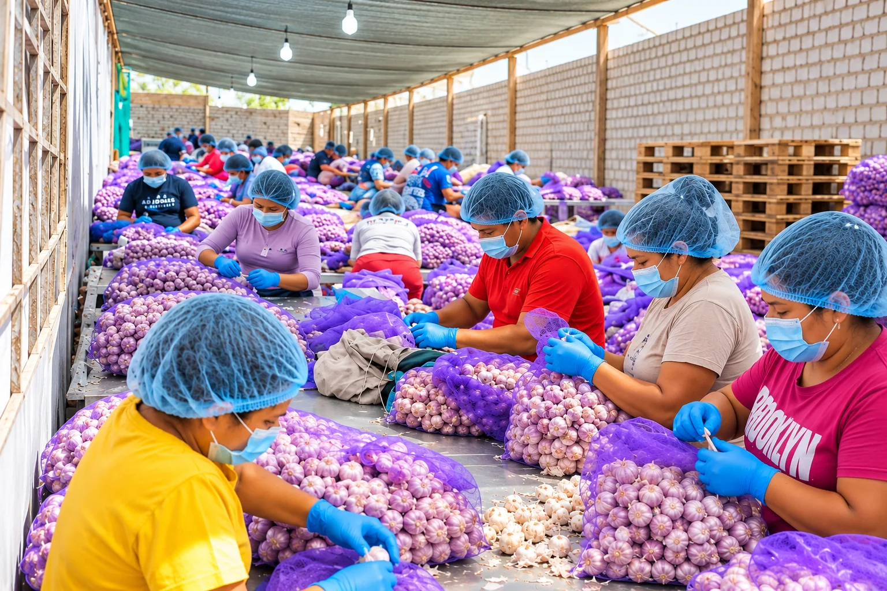
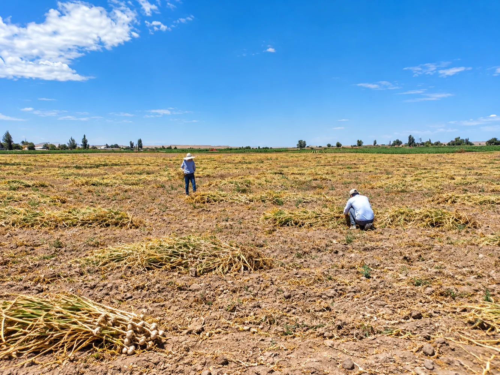
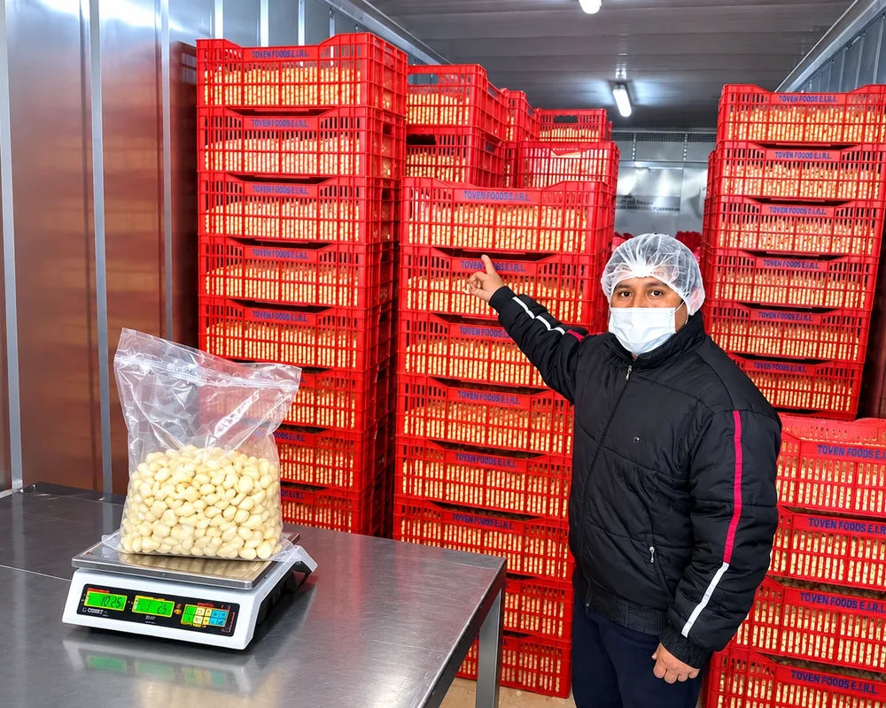
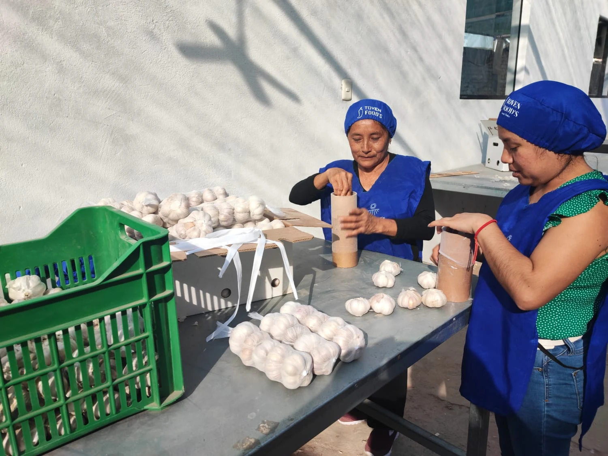
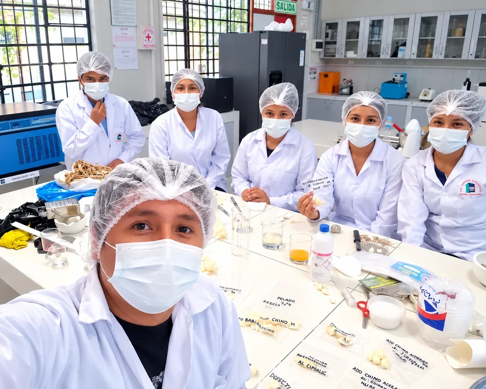
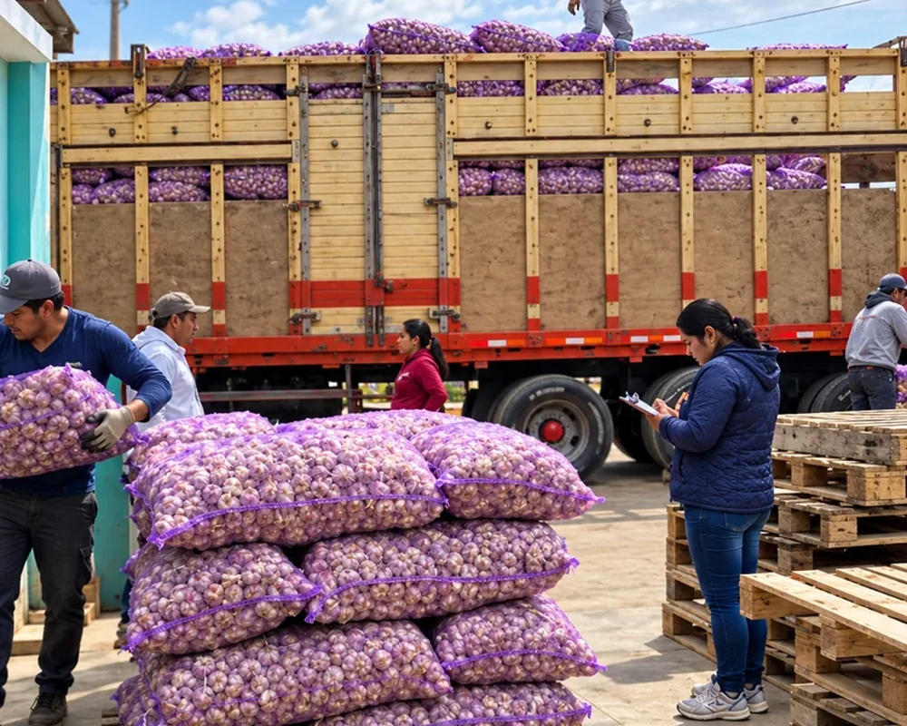
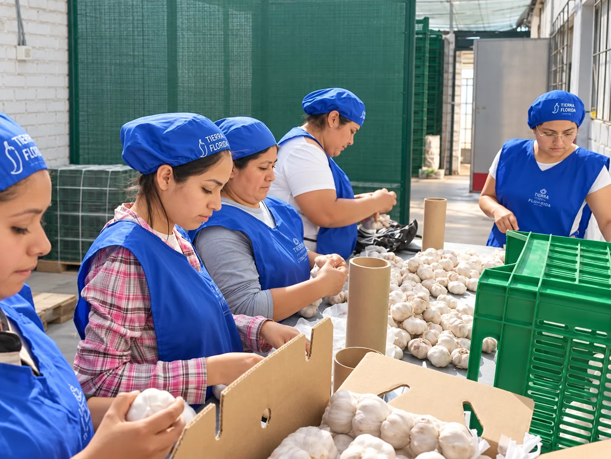
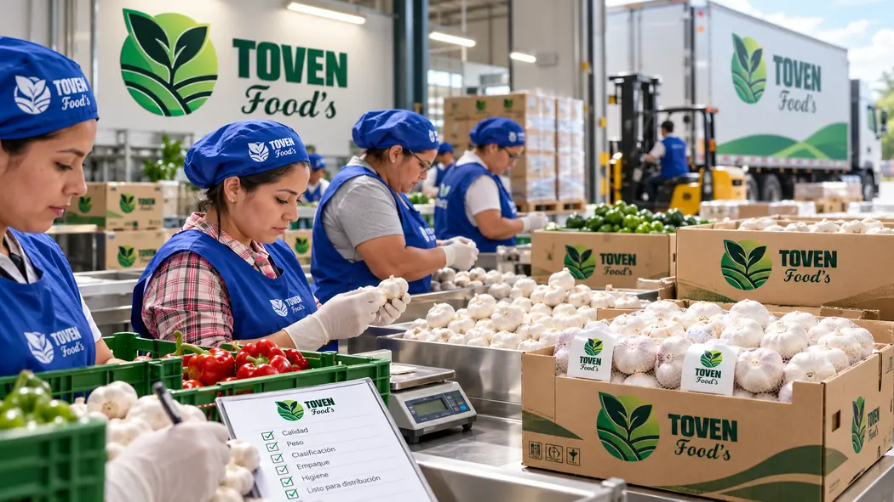

TOVEN FOODS · AGROINDUSTRIA PERUANATOVEN FOODS
TOVEN FOODS
DEL CAMPO A TU MESA
Conoce nuestra empresa, nuestra vocación agroindustrial y el trabajo detrás de nuestros productos.
Conoce nuestra propuesta agroindustrial y descubre AjuSumag, nuestra línea de pasta de ajo con orégano en dos presentaciones: Gourmet y Herbal Garlic.

NUESTRO TRABAJOSomos TOVEN FOODS, una empresa peruana que apuesta por dar valor a los alimentos a través del trabajo, la transformación y el desarrollo de propuestas propias.
Conoce a las personas que forman parte de nuestra historia y descubre nuestra línea AjuSumag, una expresión de nuestra visión de crecimiento.
Dos presentaciones de pasta de ajo con orégano, comercializadas por TOVEN FOODS.



El ajo comienza su recorrido en el campo. Conoce el entorno agrícola donde se realiza su cosecha, una parte importante de la cadena de trabajo que da origen a nuestras actividades agroindustriales.
CONOCE TOVEN FOODS ↗Conoce distintas actividades relacionadas con el manejo del ajo y el trabajo agroindustrial.

Acondicionamiento y organización de materia prima.

Trabajo de selección del ajo sobre mesas.

Actividades técnicas que acompañan nuestra labor agroindustrial.

Preparación del ajo para su entrega a clientes.

El trabajo agroindustrial se construye con el esfuerzo de las personas que participan en las actividades de selección y acondicionamiento del ajo.
Queremos que cada persona que visite nuestra página conozca tanto nuestros productos como a quienes forman parte del proceso.
CONOCE NUESTRA EMPRESA ↗En TOVEN FOODS valoramos la organización, el cuidado en el manejo de alimentos y el compromiso con nuestro trabajo.

Desde el trabajo del personal hasta la entrega al cliente: conoce más de nuestras actividades.
Conoce nuestras dos presentaciones AjuSumag y comunícate con nuestra empresa para recibir información comercial.